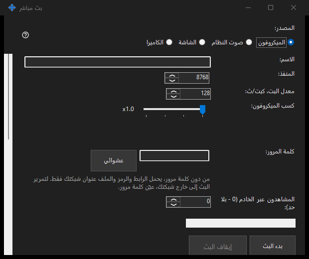

البث المباشر
الغرض من هذه النافذة
شارك الشاشة أو نافذة واحدة أو الكاميرا أو الميكروفون أو صوت النظام من Share Manager. افتح بثًا في العارض 64 بت برابط أو رمز أو ملف .fmsbcast. لا يبدأ الالتقاط إلا عند الضغط على بدء.


بهذا الترتيب
اختر المصدر ثم الشاشة أو نافذة واحدة، أو الكاميرا ووضعها. راجع العنوان وكلمة مرور المشاهد والصوت ووصول الشبكة المحلية قبل بدء البث. يتلقى المشاهدون الصورة والصوت المحددين، بما فيهما المحتوى الخاص الظاهر. انسخ الرابط أو احفظ .fmsbcast بعد بدء البث. ينهي إيقاف الجلسة؛ وإغلاق النافذة الملتقطة ينهي بثها أيضًا.
عناصر النافذة
البث المباشر
اختر المصدر ثم الشاشة أو نافذة واحدة، أو الكاميرا ووضعها. راجع العنوان وكلمة مرور المشاهد والصوت ووصول الشبكة المحلية قبل بدء البث. يتلقى المشاهدون الصورة والصوت المحددين، بما فيهما المحتوى الخاص الظاهر. انسخ الرابط أو احفظ .fmsbcast بعد بدء البث. ينهي إيقاف الجلسة؛ وإغلاق النافذة الملتقطة ينهي بثها أيضًا.